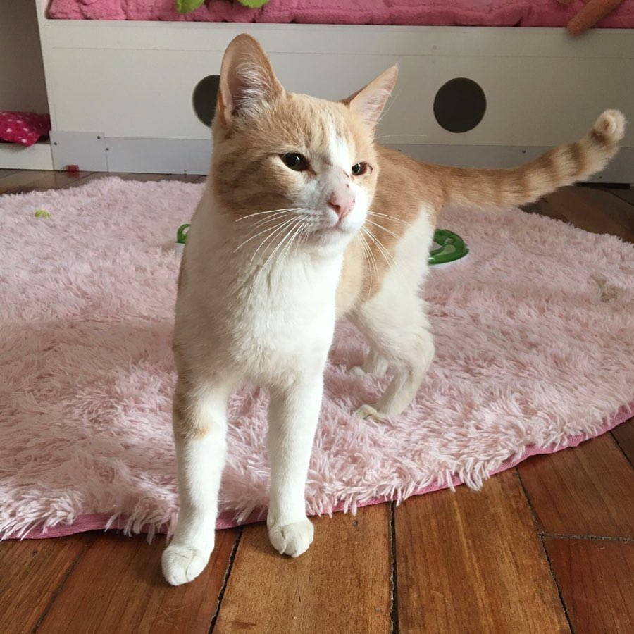

Preguntas frecuentes
Los Cat Cafés son básicamente un lugar donde se sirven bebidas, comida, y se puede disfrutar la compañía de gatitos a la vez.
No es necesario hacer una reserva ya que aceptamos visitas diarias, pero si lo recomendamos para asegurar tu visita.
Nuestros michis provienen de rescates locales, no trabajamos exclusivamente con ningún refugio animal.
No aceptamos el ingreso de mascotas a nuestro café.
De traer a tu gatito, estresarías a nuestros gatos residentes y también al tuyo.
La idea de los Cat Cafés es hacerte pasar un tiempo de calidad junto a los gatitos rescatados.
No, nuestros michis son alimentados por nosotros con alimentos especiales para ellos.
